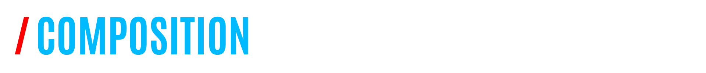

Description
- La Commission Inscription Communication et Coordination (CICC) au sein du journal lycéen joue un rôle central dans la gestion des membres, la communication interne et externe, ainsi que la coordination des activités. Cette commission assure la fluidité des processus organisationnels et renforce les liens entre les membres du journal.
Objectifs
- Gestion des Inscriptions : La CICC supervise le processus d'inscription des nouveaux membres au journal. Elle s'assure de collecter les informations nécessaires et de faciliter l'intégration des nouveaux adhérents.
- Communication Interne : Fournir une plateforme efficace de communication au sein de l'équipe du journal. Cela inclut la diffusion d'informations, la gestion des horaires et des réunions, ainsi que la promotion d'une collaboration transparente entre les différents postes.
- Communication Externe : Gérer la présence du journal sur les plateformes de médias sociaux, assurer la promotion des publications et des événements. La CICC est responsable de créer une image positive et engageante du journal auprès de la communauté lycéenne.
- Coordination des Activités : Coordonner les différentes tâches et responsabilités au sein du journal. S'assurer que chaque membre comprend son rôle, ses responsabilités et contribue de manière significative aux objectifs généraux du journal.
- Réponse aux Questions et Préoccupations : Être le point de contact principal pour les questions, les préoccupations et les suggestions des membres du journal. La CICC s'efforce de maintenir une atmosphère ouverte et encourageante au sein de l'équipe.
- Événements et Projets : Collaborer avec la Maison Des Lycéens (MDL) pour la planification et la coordination d'événements. La CICC veille à ce que tous les membres soient informés et impliqués dans ces initiatives.

Présidente : Lamia GORGULU (Directrice Générale)
|